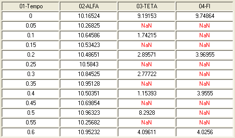

| Menu Dados |
  |
Análise
de Subcomutação
Em sistemas de gravação de dados digitais, é comum que parâmetros de dinâmica mais lenta sejam amostrados com uma cadência menor que a normal, enquanto parâmetros de alta dinâmica sejam amostrados com cadência maior. Dessa forma, a cada "frame" de gravação de dados, é possível ter parâmetros registrados mais de uma vez, enquanto outros só são gravados em alguns frames.
A amostragem e gravação de um parâmetro com uma taxa maior que a cadência normal dos "frames" é chamada "supercomutação", enquanto que o inverso é chamado "subcomutação".
Como o R_DAT trabalha com uma matriz de dados retangular, em que cada linha representa um momento no tempo (observação), todos os parâmetros têm que ter a mesma cadência. Por isso, parâmetros supercomutados têm seus registros extras desconsiderados e parâmetros subcomutados são intercalados com o valor "NaN" ("not-a-number", que representa um dado não válido), pois não é possível ter espaços vazios na matriz de dados.
No exemplo abaixo, a cadência normal de frames é de 20 Hz, como pode ser visto pelo parâmetro "Tempo". Contudo, o parâmetro "TETA" só apresenta valores válidos uma vez a cada dois frames e o parâmetro "FI" uma vez a cada quatro frames. Isso significa que o parâmetro TETA foi amostrado com cadência de 10 Hz e o parâmetro FI com cadência de 5 Hz.

Trabalhar com dados subcomutados no R_DAT não é recomendado, pois os valores inválidos podem afetar algumas operações, além de prejudicarem a visualização dos parâmetros nos gráficos. Esse problema pode ser solucionado de duas formas:
- Interpolando os dados inválidos de cada parâmetro; ou
- Eliminando os dados inválidos de um determinado parâmetro, reduzindo a cadência de toda a matriz para a cadência do parâmetro desejado.
A função "Análise de subcomutação" permite que o usuário analise os parâmetros e aplique a solução mais adequada.
Clique no menu “Dados ► Análise de dados
... ► Análise de
subcomutação”.
Será
apresentada uma janela com a análise dos parâmetros e a representação
gráfica da subcomutação:

Nessa coluna são listados os parâmetros normais, ou seja, sem subcomutação. O usuário não pode alterar essa coluna.
Nessa coluna são listados os parâmetros subcomutados, seguidos da taxa de subcomutação. A indicação "1:X" significa uma leitura válida a cada X linhas. A máxima taxa reconhecida é 1:64.
O usuário deve selecionar com o mouse e os botões "Ctrl" e "Shift" os parâmetos que deseja interpolar, ou o parâmetro de referência para redução de cadência, dependendo da opção escolhida.
Para selecionar todos os parâmetros subcomutados, clique no botão "Selecionar todos". Para selecionar por taxa de subcomutação, clique no botão "Filtrar ..." e escolha a taxa desejada.
Grade de representação gráfica
Na grade à direita será apresentada uma representação gráfica da subcomutação. Cada coluna representa um parâmetro e cada linha representa uma observação. Use as barras de rolagem para percorrer todos os dados.
O código de cores é o seguinte:
- Quadrado azul: valor válido;
- Quadrado branco: valor inválido ("NaN"); e
- Quadrado vermelho: parâmetro selecionado.
Ao passar o cursor sobre a grade, será apresentado o nome do parâmetro correspondente.
Para selecionar um parâmetro, clique sobre sua coluna na grade com o botão esquerdo do mouse. Para desselecioná-lo, clique com o botão direito do mouse.
Opções de correção
No campo
"Opção", selecione a correção desejada. As opções são:
|
Opção |
Descrição |
|
Interpolar |
Interpola os dados inválidos dos parâmetros selecionados, de acordo com o método desejado. |
|
Excluir |
Exclui
os pontos inválidos do parâmetro selecionado, reduzindo a cadência de
toda a matriz. |
| Nota:
Ao escolher a opção "Excluir", certifique-se que os valores válidos dos
demais parâmetros estejam nas mesmas linhas que os do parâmetro de
referência. Subcomutações "descasadas" não podem ser corrigidas por
esse método. |
Ao selecionar "Interpolar", é necessário informar o método de interpolação. As opções são:
|
Opção |
Descrição |
|
Linear |
Interpola linearmente de acordo com um tempo de referência. |
|
Vizinho |
Atribui o valor do ponto válido mais próximo (anterior ou posterior) de acordo com um tempo de referência. |
|
Repetir |
Repete o valor válido anterior. |
Para os métodos "Linear" e "Vizinho", é necessário indicar um tempo de referência. O mesmo deve ser adequado, ou seja, monotônico crescente e sem pontos inválidos ("NaN").
Para o método "Linear", parâmetros com escala cíclica, como ângulos de Euler, podem ser incorretamente interpolados entre observações que apresentam descontinuidade (por exemplo, proa acima de 360° volta para o início da escala). Para evitar esse efeito, o usuário deve indicar quais parâmetros possuem essa característica (em graus). De forma semelhante, parâmetros lógicos (como estado de acionamento) ou inteiros (como TOP), podem ser incorretamente interpolados entre observações que apresentam saltos (por exemplo, de 0 a 1 surgiriam valores intermediários). Para evitar esse efeito, o usuário deve indicar quais parâmetros possuem essa característica. A interface para indicação desses parâmetros é a mesma da função Reamostrar.
Após selecionar todas as opções, clique "OK" e confirme. A matriz de dados será atualizada conforme as correções efetuadas.
| Nota: É recomendado
salvar as matrizes de trabalho antes de realizar a operação, pois as
alterações são profundas e não é possível desfazê-las. |
| |
MATLAB Signal Processing Tool | Criar novo
parâmetro |
|